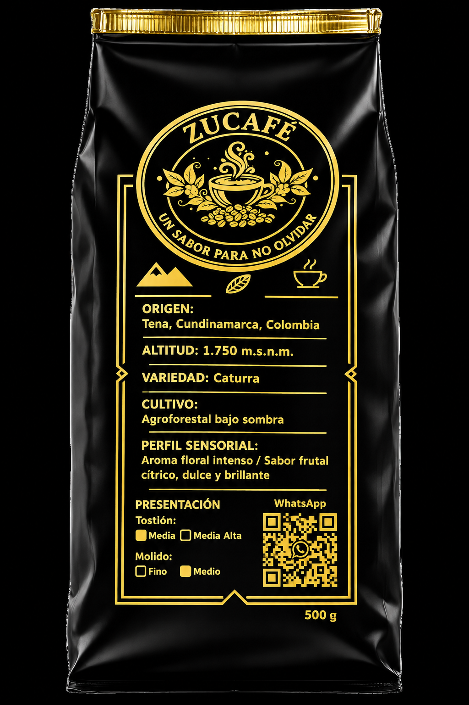
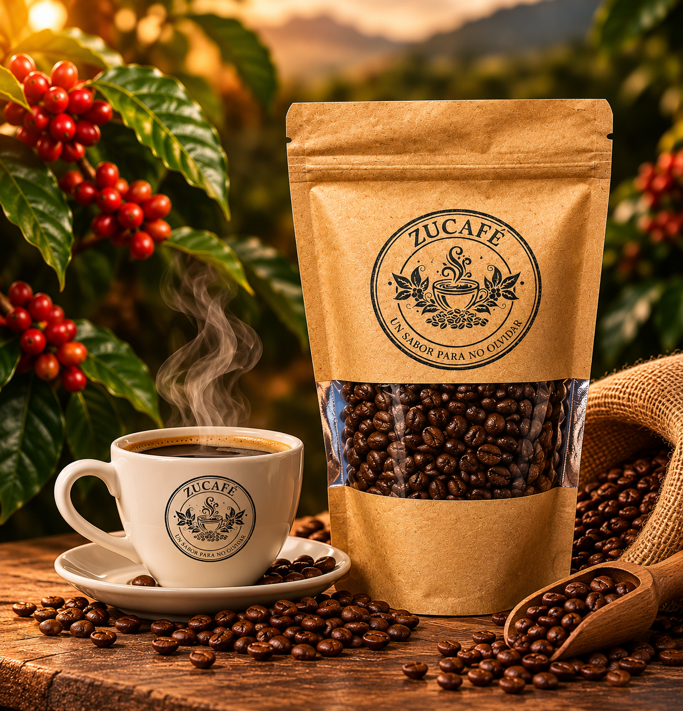
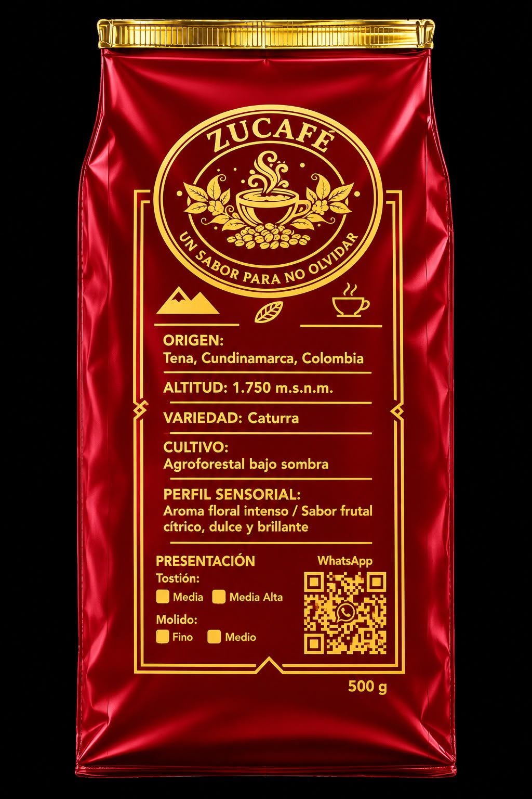

Café Molido Tradicional (500g)
Tostión media con notas dulces a panela y chocolate. Ideal para greca o cafetera tradicional.
$25.000 COPCafé artesanal cultivado con tradición
Seleccionamos, tostamos y empacamos nuestro café de forma artesanal para garantizarte frescura en cada grano.
Ver CatálogoElige tu presentación favorita:

Tostión media con notas dulces a panela y chocolate. Ideal para greca o cafetera tradicional.
$25.000 COP
Granos enteros seleccionados a mano para quienes disfrutan moler su café al instante.
$28.000 COP
Cosecha limitada con aroma intenso y acidez balanceada.
$18.000 COPConoce de dónde viene nuestro café y nuestros puntos de distribución:
Origen: Región Cafetera, Colombia
Horario de atención: Lunes a Sábado de 8:00 a.m. a 6:00 p.m.
Envíos: Realizamos entregas a domicilio en Bogotá, Soacha y envíos nacionales.

¿Quieres hacer un pedido al por mayor o tienes alguna duda? Escríbenos: